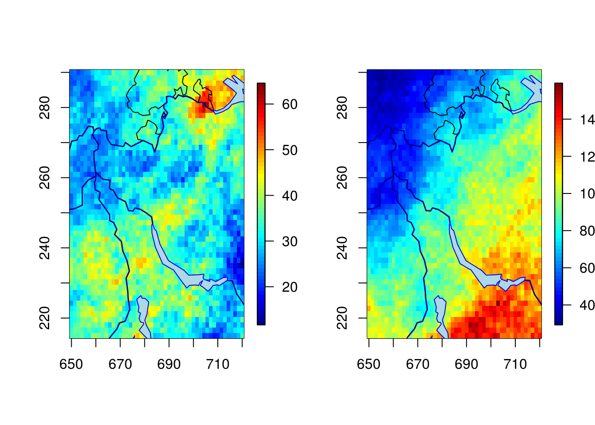
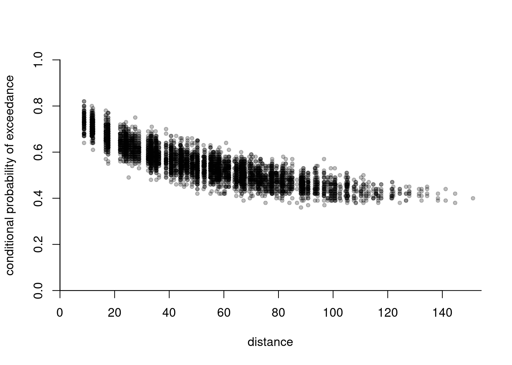
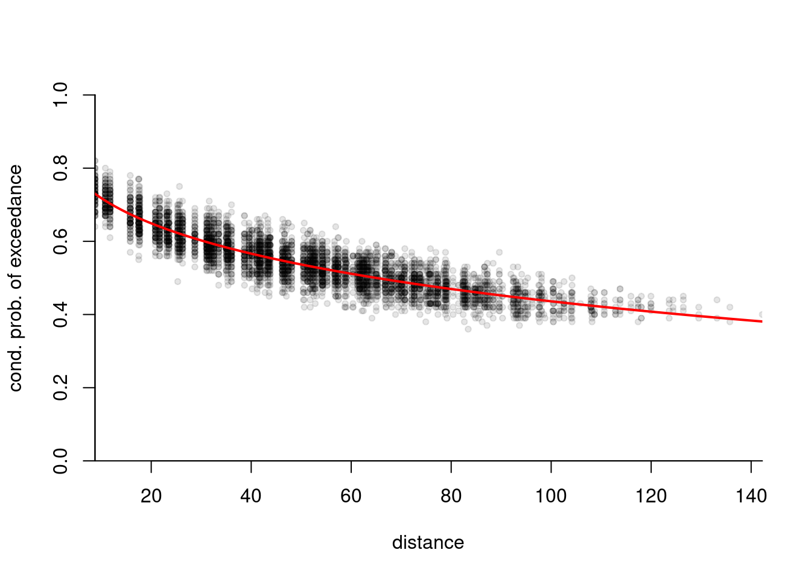

4 Simulation
The original goal of the mev package was to implement the algorithm of (???) in order to perform exact simulation from max-stable vectors. Since then, other algorithms for simulating from standard \(R\)-Pareto processes and generalized \(R\)-Pareto processes have been implemented. These are based on accept-reject method or composition sampling.
Let’s start by simulating from a simple max-stable random vector from the negative logistic model. The margins are unit Frechet, and we can verify this by pooling the observations and fitting a generalized extreme value distribution to the sample.
library(mev)
set.seed(1234)
samp <- rmev(n = 1000, d = 5, param = 0.1, model = "neglog")
fit.gev(c(samp), show = FALSE)$estimate## loc scale shape
## 0.994592 1.001284 1.035500We simulate a spatial generalized \(R\)-Pareto process.
lon <- seq(650, 720, length = 50)
lat <- seq(215, 290, length = 50)
# Create a grid
grid <- expand.grid(lon,lat)
coord <- as.matrix(grid)
dianiso <- distg(coord, 1.5, 0.5)
sgrid <- scale(grid, scale = FALSE)
# Specify marginal parameters `loc` and `scale` over grid
eta <- 26 + 0.05*sgrid[,1] - 0.16*sgrid[,2]
tau <- 9 + 0.05*sgrid[,1] - 0.04*sgrid[,2]
# Parameter matrix of Huesler--Reiss
# associated to power variogram
Lambda <- ((dianiso/30)^0.7)/4
# Simulate generalized max-Pareto field above u=50
set.seed(345)
simu1 <- rgparp(n = 1, thresh = 50, shape = 0.1, riskf = "max",
scale = tau, loc = eta, sigma = Lambda, model = "hr")
# The same, but conditional on an exceedance at a site
simu2 <- rgparp(n = 1, thresh = 50, shape = 0.1, riskf = "site",
siteindex = 1225, scale = tau, loc = eta,
sigma = Lambda, model = "hr")
#Plot the generalized max-Pareto field
par(mfrow = c(1,2))
fields::quilt.plot(grid[,1], grid[,2], simu1, nx = 50, ny = 50)
SpatialExtremes::swiss(add = TRUE)
fields::quilt.plot(grid[,1], grid[,2], simu2, nx = 50, ny = 50)
SpatialExtremes::swiss(add = TRUE)
# Value at conditioning coordinate should be greater than 50
simu2[1225]## [1] 84.81661The code snippet below fits a Brown–Resnick model with power variogram to simulated data from the same model (based on more than one replicate). The parameters are estimated by minimizing the squared distance between empirical cloud of pairwise conditional probability of exceedance and the theoretical one. We include geometric anisotropy in the analysis.
lon <- seq(650, 720, length = 10)
lat <- seq(215, 290, length = 10)
# Create a grid
grid <- expand.grid(lon,lat)
coord <- as.matrix(grid)
dianiso <- distg(coord, 1.5, 0.5)
sgrid <- scale(grid, scale = FALSE)
# Specify marginal parameters `loc` and `scale` over grid
eta <- 26 + 0.05*sgrid[,1] - 0.16*sgrid[,2]
tau <- 9 + 0.05*sgrid[,1] - 0.04*sgrid[,2]
# Parameter matrix of Huesler--Reiss
# associated to power variogram
Lambda <- ((dianiso/30)^0.7)/4
# Simulate generalized max-Pareto field above u=50
set.seed(345)
simu1 <- rgparp(n = 1000, thresh = 50, shape = 0.1, riskf = "max",
scale = tau, loc = eta, sigma = Lambda, model = "hr")
extdat <- extremo(dat = simu1, margp = 0.9, coord = coord,
scale = 1.5, rho = 0.5, plot = TRUE)
# Constrained optimization
# Minimize distance between extremal coefficient from fitted variogram
mindistpvario <- function(par, emp, coord){
alpha <- par[1]; if(!isTRUE(all(alpha > 0, alpha < 2))){return(1e10)}
scale <- par[2]; if(scale <= 0){return(1e10)}
a <- par[3]; if(a<1){return(1e10)}
rho <- par[4]; if(abs(rho) >= pi/2){return(1e10)}
semivariomat <- mgp::power.vario(distg(coord, a, rho), alpha = alpha, scale = scale)
sum((2*(1-pnorm(sqrt(semivariomat[lower.tri(semivariomat)]/2))) - emp)^2)
}
# constrained optimization for the parameters
hin <- function(par, ...){
c(1.99-par[1], -1e-5 + par[1],
-1e-5 + par[2],
par[3]-1,
pi/2 - par[4],
par[4]+pi/2)
}
opt <- alabama::auglag(par = c(0.5, 30, 1.5, 0.5),
hin = hin, control.optim = list(parscale = c(0.5, 30, 1.5, 0.5)),
fn = function(par){
mindistpvario(par, emp = extdat[,'prob'], coord = coord)})## Min(hin): 0.49999
## Outer iteration: 1
## Min(hin): 0.49999
## par: 0.5 30 1.5 0.5
## fval = 77.37
##
## Outer iteration: 2
## Min(hin): 0.3992261
## par: 0.668296 74.8862 1.39923 0.556808
## fval = 6.52
##
## Outer iteration: 3
## Min(hin): 0.3992502
## par: 0.668285 74.8855 1.39925 0.556807
## fval = 6.52
## stopifnot(opt$kkt1, opt$kkt2)
# Plotting the extremogram in the deformed space
distfa <- distg(loc = coord, opt$par[3], opt$par[4])
plot(c(distfa[lower.tri(distfa)]), extdat[,2], pch = 20,
col = scales::alpha(1,0.1), yaxs = "i", xaxs = "i", bty = 'l',
xlab = "distance", ylab= "cond. prob. of exceedance", ylim = c(0,1))
lines(x = (distvec <- seq(0,200, length = 1000)), col = 2, lwd = 2,
2*(1-pnorm(sqrt(power.vario(distvec, alpha = opt$par[1], scale = opt$par[2])/2))))